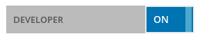
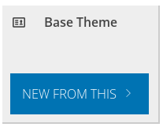

SiteChef Theme Documentation
This is a guide to creating and editing themes using the SiteChef Cli tool
Quickstart
- Install Node.js
- Install the SiteChef command line utility
npm install sitechef -g - Clone your theme to a local directory
sitechef init [your-api-key] [optional directory name]eg:sitechef init 999999999888888 - Move to your directory (
cd [your-directory]) and run the local serversitechef serve
How to generate an API key for a theme
- Sign in to the SiteChef Admin area
- Go to the "Your Account" section
- Turn on "Developer Mode": 
- Go to "Theme Manager" and click "Edit/Clone Existing"
- Select one of the existing themes and choose "New From This" 
- Create a new name and description for this theme. "Clonable" means that this theme can be cloned by other developers "Private" means that this theme will only be made available to the current site
Project layout
mkdocs.yml # The configuration file.
docs/
index.md # The documentation homepage.
... # Other markdown pages, images and other files.